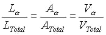
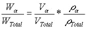

An alloy is composed of two or more chemical elements of which at least one is a metal. The relative percentages of the elements (or constituents) is called the alloy composition. When an alloy has only two constituents, it is referred to as a binary alloy. The name given to all possible alloys between these two constituents, e.g., A and B, is the A-B alloy system.
Phase diagrams show that alloys may have a single phase or multiple phases, depending on the temperature, pressure, composition and other thermodynamic factors. In this project, alloy compositions that consist of two phases are investigated in the copper - zinc alloy system. Alloys in the Cu-Zn system are commonly called "brass". The two phases in question, a and b, differ in composition and/or structure. The a-phase maintains an FCC structure with a lattice parameter of 3.67 Å, while the BCC b-phase has a smaller lattice parameter of 2.99 Å. In this exercise the relative amount of the two phases in the Cu-Zn system are quantitatively determined.
Quantitative metallography
The relative amounts of these phases can be approximated through metallography. Polishing and etching of a two-phase alloy will reveal the two phases separated by distinct boundaries. Since the microstructure is three dimensional, a quantitative analysis of a polished surface will yield only a relative area percentage of the two phases. It can be shown, however, that the volume fraction of that phase is equal to the area fraction of that phase in a plane section.
A relatively simple way to measure the area fraction is to draw random, straight lines across a photomicrograph of the two-phase microstructure. This technique is called "linear analysis" (or "modified intercept"). The ratio of the lengths (that pass through one phase) to the total length can approximate the area fraction:

One additional point must be explained to facilitate your understanding of this experiment. When a solid, metallic alloy is cooled rapidly from a very high temperature to room temperature, there is insufficient time to allow the equilibrium reactions and phase transformations to occur. Therefore, the room temperature microstructure (and thus the linear fraction of the phases) will be identical to that of the elevated temperature microstructure from which it was quenched. This process is called "quenching-in a high temperature microstructure".
Determination of overall composition
Having obtained the volume fraction of the a phase from linear analysis, the weight fraction can be calculated:

where ra and rtotal are theoretical densities ("x-ray densities") of the a phase and the two-phase solid, respectively. The theoretical density of the a-phase, ra, can be determined by considering that each unit cell of contains both copper and zinc atoms, depending on the phase composition. The same is true for .
The total density of the two-phase alloy (rtot) can be calculated using conservation of atoms:
rtot = (Va/Vtot)(ra) + (Vb/Vtot)(rb)
Metallographic Specimen preparation
The following information provides a crash course in sample prep, which involves two distinct processes. The first steps, grinding and polishing, remove the visible scratches from the specimen, thus producing a mirror-like optical finish. The second process, etching, differentially chemically attacks the constituents of the specimen, resulting in an optical contrast, thus allowing microscopic examination of the microstructure.
- Grind:
Rough grind specimen to remove heavy visible scratches using four progressively finer grades of emery paper. This is accomplished in four steps using either a rotating wheel apparatus or a stationary strip apparatus. Water flows over the emery grinding paper to carry away any debris or residue generated by grinding.
Begin by using the rotating wheel to put a chamfer on the edge of the cylindrical specimen. This will prevent possible tearing of the emery paper and subsequent damage to the specimen surface. Start the polishing wheel, adjusting the speed to approximately seventy five percent of maximum. Place the specimen on its edge and holding it tightly, rotate slowly along the edge to create a beveled edge.
Continue grinding the sample surface, holding it in flat contact with the paper surface. Also move the specimen radially to ensure even wear on the paper. Friction may cause the specimen to "tug" away and try to escape your grasp. In order to avoid losing your specimen a combined effort is needed for coordinating a firm grasp on the specimen while simultaneously applying light contact to the paper surface. This skill will be acquired with time. This procedure replaces the heavy original scratches on the specimen surface with scratches characteristic of this 240 grit emery paper. The process is continued until all previously visible scratches are replaced.
The specimen is now advanced to the next finer emery paper. After rotating the specimen by 90 degrees, use the stationary apparatus to draw the specimen downward along the length of the strip of 320 grit emery paper under slight to moderate pressure. Repeat the above procedure until the previous scratches are replaced with the new scratches now 90 degrees to the former. The last two grinding steps are critical to the surface condition of the specimen. Great care should be used when working with these emery papers (400, 600). It may be helpful to spend extra time, relative to the other grits, on these latter two to ensure the finest surface condition possible.
Between grinding steps the specimen should be thoroughly rinsed along with fingertips to reduce the threat of contamination. The progress of grinding can be observed using optical microscopes to check that scratches from each step are indeed successively removed.
- Polish:
After the finest surface condition has been obtained by grinding on the emery paper, wash the specimen and your hands carefully before progressing to the polishing wheels.
The first polishing wheel is covered with nylon cloth and located in the beched labeled 1.0 micron. A suspension consisting of 1.0 micron alumina (aluminum oxide) powder suspended in water is used to moisten the canvas. This solution acts as a mild abrasive (not a lubricant) which aids in stripping the specimen's surface of scratches left by the finest grit of emery paper, in the previous grinding procedure. Shake the bottle containing this solution and spread it on the wheel. This solution should be applied sparingly, but continuously, throughout the polishing procedure to ensure uniform polishing and to avoid damage to the cloth. Hold the specimen in flat contact with the cloth surface and rotate the specimen slowly in a direction opposite that of the wheel. Also move the specimen radially to ensure even wear on the cloth. When all evidence of the scratches from grinding has disappeared, you are ready to move to the second and final stage of polishing. But first YOU MUST WASH THE SAMPLE AND YOUR HANDS BEFORE MOVING ON.
These wheels are labeled 0.05 micron and are covered with alpha A felt. A suspension consisting of water and 0.05 micron alumina (aluminum oxide) powder is used to moisten the felt. Polish as before until all evidence of the previous polishing stap has disappeared. The surface of the sample should be as a mirror.
Examine the surface under a microscope to see if adequate surface preparation has been achieved. No scratches of any depth should be visible: the surface should have a mirror-like finish.
- Etching:
The purpose of etching is to reveal the alloy microstructure to visual inspection. The etching reagent chemically attacks the alloy's constituents in various ways. For example, the etching reagent for copper-zinc alloys is 50% NH4OH + 50% H2O2. This reagent attacks the copper-rich phase of the alloy (the a-phase), corroding it, and allowing for a light contrast and therefore visual inspection via microscope. Under magnification the copper-rich a-phase will appear dark with respect to the other phase present.
Etching is accomplished by spreading the etching reagent over the surface of the specimen either by immersion or by swabbing it on with a cotton swab. The latter is preferred in that it does not introduce contamination to the reagent.
The length of time the reagent is allowed to remain on the surface of the specimen is dependent upon the strength of the reagent and the depth of the etch desired. After a certain time the specimen is to be immediately rinsed under running water, then rinsed under alcohol, and dried under a hot air blast. Finally, examine the specimen under the microscope. If the specimen has been prepared properly a micrograph may be taken. However, if the etch is too light the specimen must be etched further. If the reagent has been left on too long the specimen must be re-polished and re-etched.
[7:52 PM, 12/3/2020] ViShNuTeJ: 1. Metallographically prepare a two-phase brass specimen which has been annealed at a specific temperature before quenching (see attached supplied data).
NOTE: Etchant is 50% NH4OH + 50% H202 by volume.
2. Obtain one photomicrograph of the specimen. Notate the magnification.
[8:16 PM, 12/3/2020] ViShNuTeJ: Perform linear analysis of ten randomly drawn lines on the micrograph to obtain the linear fractions of the a and b phases. Use a Table to represent your results.
Determine the overall density of the specimen.
Determine the weight fraction of the a phase and the overall composition, Co of the brass.
What are the most likely sources of error? Why does human error contribute little to the inaccuracy of the overall Co
Experimental Procedure
- Metallographically prepare a two-phase brass specimen which has been annealed at a specific temperature before quenching (see attached supplied data).
NOTE: Etchant is 50% NH4OH + 50% H202 by volume.
- Obtain one photomicrograph of the specimen. Notate the magnification.
Results and conclusion
- Perform linear analysis of ten randomly drawn lines on the micrograph to obtain the linear fractions of the a and b phases. Use a Table to represent your results.
- Determine the overall density of the specimen
- Determine the weight fraction of the a phase and the overall composition, Co of the brass.